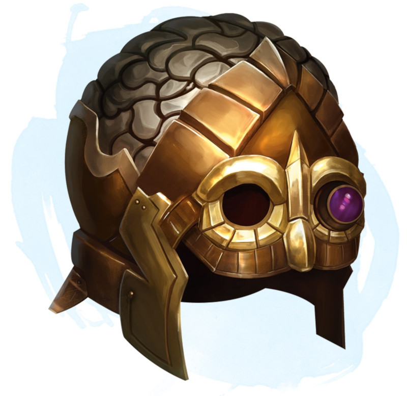

Heaume de télépathie
Objet merveilleux, peu commun (nécessite un lien)
Tant que vous êtes équipé de ce casque, vous pouvez l'utiliser, par une action, pour lancer le sort détection des pensées (sauvegarde DD 13). Aussi longtemps que vous maintenez votre concentration sur le sort, vous pouvez utiliser une action bonus pour envoyer un message télépathique à une créature sur laquelle vous vous concentrez. Elle peut répondre, en utilisant une action bonus, tant que vous continuez de vous concentrer sur elle. Tant que vous êtes concentré sur une créature en utilisant détection des pensées, vous pouvez utiliser le casque, par une action, pour lancer le sort suggestion (sauvegarde DD 13) sur cette créature. Une fois utilisée, la capacité de suggestion ne peut être réutilisée avant le prochain lever de soleil.
Dungeon Master´s Guide (SRD)
